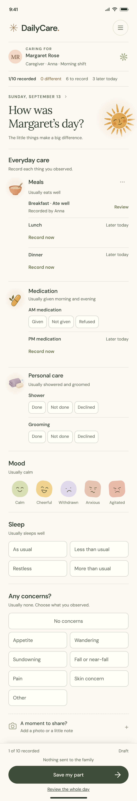
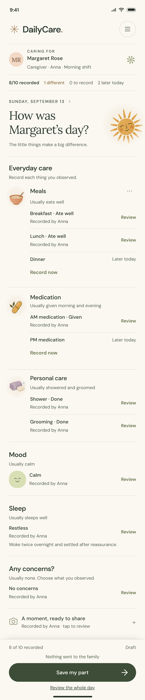
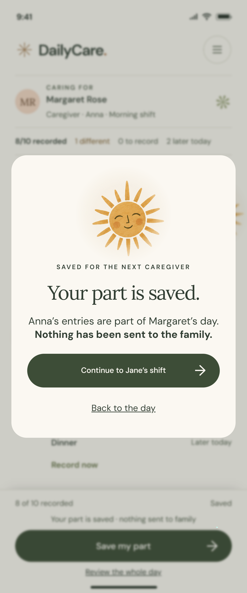
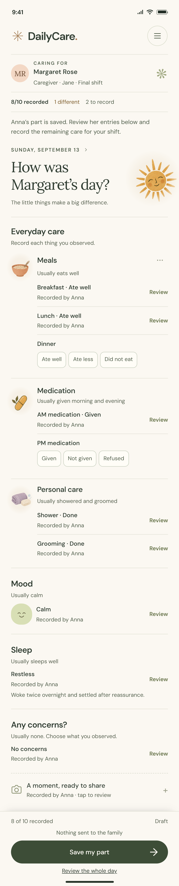
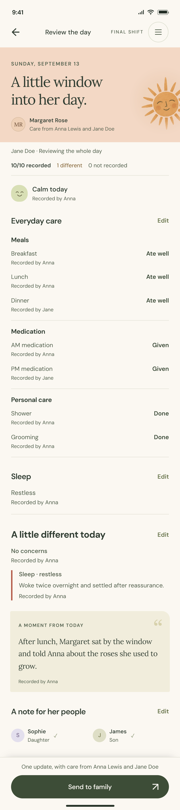
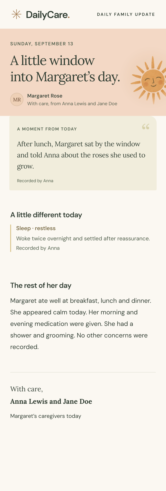
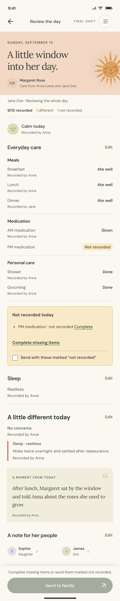
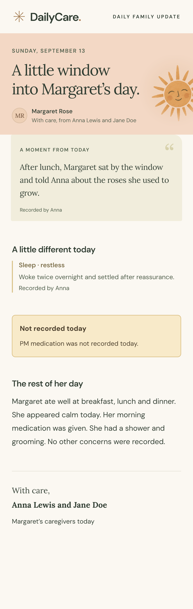
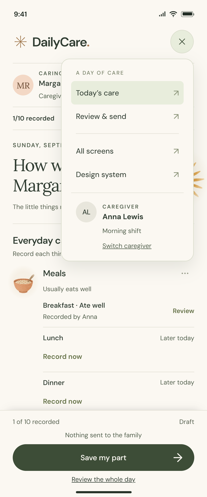

Morning recording
ANNA’S MORNING SHIFT

The day begins with an observation.
Breakfast is recorded by Anna. Lunch, dinner and PM medication are later today. Mood, sleep and concern choices stay open until Anna answers.
THE EXPERIENCE, FROM EVERYDAY CARE TO FAMILY UPDATE
Several caregivers.
One recorded day.
One update for the family.
Observe, record and save for the next caregiver.
ANNA’S MORNING SHIFT

Breakfast is recorded by Anna. Lunch, dinner and PM medication are later today. Mood, sleep and concern choices stay open until Anna answers.
END OF THE FIRST SHIFT

Anna has recorded breakfast, lunch, AM medication, shower, grooming, calm mood and restless sleep. Each answer keeps her name and can be reopened.
NOTHING SENT TO THE FAMILY

Anna saves her entries and the personal moment about Margaret’s roses. Saving a part keeps the day ready for handover; it does not send a family update.
Handover, final review and one family update.
THE SAME DAY, NEXT SHIFT

Jane sees Anna’s completed care and the remaining dinner and PM medication choices. Reviewing an earlier answer keeps Anna’s attribution.
FINAL SHIFT

Jane records dinner and PM medication. The review brings together all ten answers, the restless sleep note and the personal moment exactly as recorded.
ONE DAY, SHARED

Margaret’s recorded conversation about roses leads the update. Restless sleep follows, then the rest of the day, signed by Anna Lewis and Jane Doe.
An explicit gap, carried into the family update.
ALTERNATIVE ENDING

In this alternative, PM medication has no answer. Jane can return directly to that item or explicitly send it marked not recorded.
THE SAME ALTERNATIVE ENDING

The family sees that PM medication was not recorded. The update keeps the same recorded moment, sleep note and meal answers.
WITHIN THE EXISTING MENU

Margaret stays the resident. The active caregiver appears beneath her name and at the bottom of the menu with an initials avatar, role and full name.
D / THE FOUNDATION BEHIND THE SCREENS
The shared colors, typography, icons, spacing, and component states that keep every screen consistent.
A calm canvas, clear actions, and a little warmth.
#FBF8F2App canvas
#303D32Primary text
#3D4D37Primary actions
#E8EDDCRecorded care
#F3D8C5Family summary
#F3E6ACChanges & portions
#E2DCEFMood accents
Warm titles. Clear everyday reading.
Headlines & personal notes
Body text, labels & controls
Familiar symbols with a human touch.
Simple line icons for actions; textured illustrations for care and emotion.
The same visual language, from the first tap to the last.
Color, icon, and label communicate status together.
Distinct expressions; an outline marks the chosen mood.
Show the amount visually, with a plain-language label.
One clear next step. Disabled until a recipient is selected.
Room to breathe, without a dashboard of cards.
8px controls · 16px surfaces · 24px sheets · pill-shaped primary actions
Lightweight by default. Clear when something changes.
01Record each observation. Nothing is preselected.
02Reveal relevant detail. Optional sheets add context.
03Review before sharing. Unrecorded items stay visible.
Visible keyboard focus · text labels beside icons · reduced motion